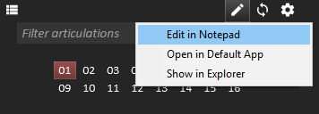
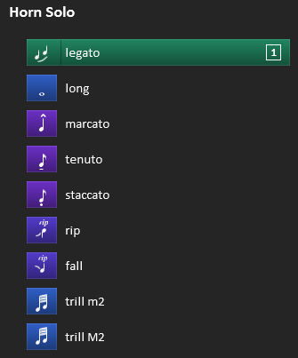
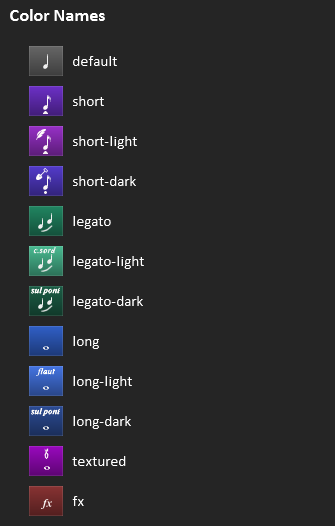

Reaticulate - Reabanks Development
Add Definitions
Massive still ToDo phase, here. For now:
* Unzip
* Open Reaper
* To install the script:
1.
2.
3.
4.
Tackaberry’s Reaticulate Page
Reaticulate Notations for Reabank files
Note: In the alpha preview of Reaticulate, there is no GUI for creating custom banks. It’ll come, but for now, you’ll need to understand the nitty gritty on this page.
Reaticulate directly manages REAPER’s assigned global Reabank file, which it dynamically assembles from both the distributed factory banks and your own custom banks. Relative to REAPER’s resource directory (which you can find by invoking the REAPER action “Show REAPER Resource path”), these files are:
Factory banks: Scripts/Reaticulate/Reaticulate-factory.reabank
User banks: Data/Reaticulate.reabank
(Reaticulate combines these files into a file it manages called Data/Reaticulate-tmp*.reabank. You’ll never edit this file directly, but it’s what Reaticulate feeds back to REAPER to use as the default reabank file.)
Note: You can take a look at the factory banks for inspiration, but if you want to start slinging your own custom articulation banks, the easiest way is to click the pencil button at the top of the UI and open the file in your editor. Clicking this will create the file if necessary before opening the editor. Open in Default App will launch whatever application you’ve associated with .reabank files.
Once you save changes to the file, click the reload button (next to the pencil) to force Reaticulate to pick up the changes.
Anatomy of a standard Reabank file
Let’s take a look at the normal REAPER reabank file. The standard format is:
Bank <MSB> <LSB> <Bank name>
<program number> <articulation name>
For example:
Bank 65 1 Spitfire Symphonic Brass - Horn Solo
20 legato
1 long
52 marcato
50 tenuto
40 staccato
100 rip
101 fall
70 trill m2
71 trill M2
The two numbers on the Bank line indicate the MSB and LSB of the MIDI bank. These values are between 0 and 127 and are somewhat arbitrary, as long as the pair is unique to the REAPER instance. Following that is an arbitrary name for the bank.
Note: User banks must use MSBs from 0 to 63. MSB of 64 and above are reserved for factory banks.
Each subsequent line (until the next Bank line) specifies the programs for the bank. The number is the MIDI Program Change event number. Although the program numbers are arbitary and don’t influence any specific behavior, some form of standardization is recommended because this allows using the Reaticulate_Activate articulation by CC actions to trigger a given articulation - or at least its closest approximation - from a control surface, tablet, etc., no matter the underlying instrument. So, for example, by consistently using program 42 to map to spiccato, or some similar very short articulation, you could have a control surface send CC value 42 - via a CC number of your choice bound to the Activate Articulation action - to set spiccato, no matter what track is selected.
Note: Reaticulate’s factory banks will conform as closely as possible to Spitfire’s UACC specification.
The description is, in our case, the name of the articulation.
Reaticulate notations
Reaticulate extends Reabank files by adding special notations on lines starting with //!
Let’s revisit the above example bank, now notated for Reaticulate:
//! g="Spitfire/Symphonic Brass" n="Horn Solo"
//! m="Set patch to UACC"
Bank 65 1 SSB - Horn Solo
//! c=legato i=legato o=cc:32,20
20 legato
//! c=long i=note-whole o=cc:32,1
1 long
//! c=short i=marcato-quarter o=cc:32,52
52 marcato
//! c=short i=tenuto-eighth o=cc:32,50
50 tenuto
//! c=short i=staccato o=cc:32,40
40 staccato
//! c=short-dark i=rip o=cc:32,100
100 rip
//! c=short-dark i=rip-downward o=cc:32,101
101 fall
//! c=long i=trill-min2 o=cc:32,70
70 trill m2
//! c=long i=trill-maj2 o=cc:32,71
71 trill M2
… and how this bank looks in the GUI:
Notated attributes take the form:
name=value (or name=”value” if the value contains spaces)
…and are separated by whitespace. The line(s) prefixed with //! immediately preceding the uncommented line will annotate it with the supplied attributes.
When an articulation is triggered, Reaticulate will emit the MIDI output events defined by the o attribute: one or more output events that describe the action taken when the articulation is triggered. Consider this:
//! c=legato i=legato o=cc:32,20
20 legato
In that example, each articulation sends a single MIDI event: CC 32 with a value defined by the second argument. The expectation for this factory bank is that the Spitfire Horns Solo patch be set to UACC, a feature of the patch itself.
Attributes for Bank Lines
These are the supported attributes for Bank lines. Attributes are optional unless specifically marked as required.
Name |
Description |
|---|---|
g (required) |
Group name separated by slashes. Used to build a menu hierarchy for the bank.
Generally should be Vendor/Product.
|
n |
The name of the patch the bank describes. If not specified, uses the Reabank name.
|
clone |
Clones the articulations from the referenced bank, specified as a fully qualified
bank name - i.e., the groupname/bankname format - to the current bank which contains
the clone attribute. The cloned articulations will appear after any articulations explicitly
defined in the current bank.
|
off |
For articulations with note-hold outputs, this defines the ‘default program’ when no
note-hold articulation is active. The GUI will show this program as active when a manually
triggered note-hold keyswitch is released. When this articulation is explicitly activated
via Reaticulate, it will cause any active note-hold articulation to be released.
|
f |
Default articulation flags. Most can be overridden per articulation. Is a comma-
delimited list of one or more of the options below. Any option can be prefixed with ! to
negate it.
- chase: Chase CCs when target MIDI channel changes. (Default)
- antihang: Prevent note hanging when a note is released
on a different channel than it’s pressed. (Default)
- antihangcc: Similar to antihang, but prevents the note
from hanging due to sustain pedal or breath control (CC 2 and 64).
In other words, it ensures sustain release or breath
off is sent to the channel where the ringing note was
struck, regardless of the current routing. (Default)
- nobank: Blocks the bank select messages generated by
Reaticulate from hitting the downstream FX. (Default - bank level only)
- toggle: Triggering the articulation when it’s active
will deactivate it. It will still emit the output events
but the UI will indicate the articulation as off if it was previously on.
- hidden: Articulation will not be visible in the UI.
When defined at the bank level instead of a specific
articulation, the bank will not be available to add to
tracks, however any existing references to the bank
(e.g. in existing projects) will continue to work.
|
chase |
Comma-delimited list of CCs (or CC ranges) that should be chased when CC chasing
is enabled for an articulation (as is default). For example: 1,2,5,11-21,92-120.
(Default: 1,2,11,64-69)
|
m |
A custom message displayed in the track configuration page and optionally the main
articulation list screen. This usually provides some special instructions about how to
configure the virtual instrument to be compatible with the bank, or other performance details.
|
Attributes for Program Lines
Programs can be decorated with these attributes:
Name |
Description |
|---|---|
i (required) |
} Articulation icon name. See Articulation Icons section for possible names. |
n |
Overrides the articulation name for display in the articulation list in the Reaticulate
UI. Program events as seen in the MIDI editor will use the program name specified on
the uncommented line.
|
c |
Color for the articulation button. Either the name of a color (see Articulation Colors
section) or an HTML hex-style color in the form #rrggbb.
|
f |
Articulation flags as defined above. (Overrides the defaults set at the bank level.)
|
g |
A group number between 1 and 4 (defaults to 1 if not specified). Only one articulation
within a group may be active at a time. For consistency, it is recommended that you use
group 1 for the main set of articulations.
|
o |
One or more output events that describe the action taken when the articulation
is triggered. With o, things get fun. See the Output Events section for the gory details.
|
spacer |
Inserts some padding above the articulation when displayed in Reaticulate’s
main articulation list screen. The value is a number that controls the amount of padding
but generally a value of 1 will provide a sufficient visual separation.
|
transpose |
A value between -127 and 127 which defines how many pitches incoming notes
should be transposed after the articulation is activated.
|
velocity |
A multiplier between 0.00 and 10.00 (up to 2 decimals of precision) that will be
applied to incoming note velocities. The note-off velocity (if it exists – it’s quite
rare) will also be multiplied by this value.
|
pitchrange |
A value in the form min-max defining the lower and upper limits that incoming
note pitch numbers will be clamped to. For example a value of 40-70 will force all notes
with pitch values below 40 to be 40, and values above 70 to be 70.
|
velrange |
A value in the form min-max defining the lower and upper limits that incoming
note velocities will be clamped to. For example a value of 32-64 will force all notes
with velocities below 32 to be 32, and velocities above 64 to be 64.
|
Program Numbers
Although the program numbers are arbitary and don’t influence any specific behavior, some form of standardization is recommended because this allows using the Reaticulate_Activate articulation by CC actions to trigger a given articulation (or at least its closest approximation) from a control surface, tablet, etc., no matter the underlying instrument.
Note: Reaticulate’s factory banks will conform as closely as possible to Spitfire’s UACC specification.
So, for example, by consistently using program 42 to map to spiccato, or some similar very short articulation, you could have a control surface send CC value 42 (via a CC number of your choice bound to the Activate Articulation action) to set spiccato, no matter what track is selected.
Output Events Specification
Note: This section is a bit nerdy. It’s quite necessary to understand to build your own banks, but don’t worry, there are some more approachable examples later.
Programs can trigger up to 16 output events, specified by the o attribute, which ultimately describe the articulation’s behaviour.
Output events can be used to send a MIDI event to the virtual instrument to cause the underlying patch to change articulations, or even just to set up routing to some destination MIDI channel. Or both: you can have a program send a MIDI event to a specific channel, and subsequently performed MIDI will be routed to that channel.
Multiple output events are separated by a / (forward slash) where each individual output event roughly takes the form:
type@channel:arg1,arg2
(no whitespace allowed)
A more formal specification for a single output event would look like this:
[-][type][@channel[.bus]][:arg1[,arg2]][%filter_program]
…where elements enclosed in square brackets are optional, and where:
Output events prefixed with the minus sign [ - ] don’t affect the routing of future MIDI events. Otherwise, if channels are not prefixed this way then any future user-generated MIDI event will be routed to this channel when the articulation is activated.
type defines the type of output event (see below), e.g. note, cc, etc.
@channel specifies the destination MIDI channel of the output event and, unless type is prefixed with -, it implies subsequent MIDI events will also be routed to that destination channel. When channel is not specified, the destination channel will be dictated by the destination channel the defined by the user when the bank was configured on the track. (See the usage page for more information on source and destination channels.) Alternatively, a special channel value of - will direct the output event to the destination(s) setup by the previously activated articulation.
.bus specifies the destination bus of the output event and subsequent incoming events when the articulation is activated. bus is a value between 1 and 16. As with the channel, if not specified the default bus will be dictated by the destination bus for the bank’s track configuration. If the bus is defined but not the channel (e.g. @.4) then then the default channel will be used but the bus will be overridden. If you use Reaticulate’s MIDI controller feedback feature, you won’t be able to assign bus 16 as this bus is used by the feedback feature internally.
arg1 and arg2 depend on the type
%filter_program if defined will only emit the output event if the specified program number filter_program is currently active on the same channel in another group. This allows the state of other groups to modify the output events emitted by the articulation. For example, you might have an articulation group that specifies normal attack vs hard attack with different programs. A single sustain articulation could then emit different keyswitches depending on whether the normal or hard attack is selected in the group.
Possible output event types are:
Type |
Definition |
|---|---|
program |
Program change message.
arg1 indicates the program number
arg2 can be omitted
|
cc |
A CC event, with arg1 indicating the CC number and arg2 defining the CC value
|
note |
A sequence of note-on and note-off events, where arg1 defines the note number and arg2
indicates note-on velocity. arg2 is optional and if not specified the default velocity is 127.
(It is not possible to specify the note-off velocity, however. This is a seldom-used feature
of MIDI.)
|
note-hold |
A note-on event, where arg1 and arg2 are according to the note type. The
corresponding note-off event is deferred until the next articulation is activated. This
is useful with patches that use non-latching keyswitches.
|
pitch |
A pitch bend event, where arg1 is the 14-bit pitch bend value between -8192 and
8192 and arg2 is not used.
|
art |
Activate another articulation in the same bank, with arg1 being the articulation program
number and arg2 is omitted. This can be used to create composite articulations. For example,
if you have articulation groups for con sordino/senza sordino and legato/non-legato, you
could have another composite articulation for non-legato sustain con sordino that references
the articulations in the other groups.
|
Be aware that if multiple note output events are specified for a given articulation, all note-on events will be sent before any note-off event. This means as far as the target patch is concerned the notes will be simultaneously pressed. This is also true for note-hold events, except that of course in that case all the necessary note-off events will be deferred until the next articulation.
The type can also be empty, specifying just @channel, in which case the action of the articulation will just be to set up routing to the destination channel specified, with no MIDI event emitted.
Alternatively, if the type is prefixed with a - sign (e.g. -note) then the output event is emitted but routing of subsequent user MIDI events to the output event’s destination channel will not be done. This can be useful for example to send control events to listeners on other channels. If all the output events for the articulation are prefixed this way, then the destination channel routing setup by the previous articulation won’t be altered.
Output Event Examples
Ok, with the technicals out of the way, here are some examples.
Multiple notes
This one from Cinematic Studio Strings sends 3 separate notes at specific velocities to set sordino and legato in addition to the sustains patch:
//! c=long-light i=con-sord o=note:12/note:22,1/note:23,127
7 con sordino
Simple channel routing
A generic example where we have 3 individual articulation patches on 3 separate MIDI channels and we want to do simple routing only: no keyswitches needed by the underlying virtual instrument:
//! c=legato i=legato o=@1
20 legato
//! c=long i=note-whole o=@2
1 sustains
//! c=short i=staccato o=@3
40 staccato
One-off layering
Here’s another one from Cinematic Studio Strings, setting up spiccato without sordino. The twist is the “beefy spiccato” program, where we are setting CSS as with spiccato but also layering it with another patch on channel 2:
//! c=short i=spiccato o=note:17,1/note:23,1
42 spiccato
//! c=short-dark i=spiccato o=note:17,1/note:23,1/@2
44 beefy spiccato
Non-latching / latching articulation keyswitches
Now for a more sophisticated example: an excerpt from the Bohemian violin bank. This instrument controls legato by a single note toggle keyswitch (hitting the same note repeatedly toggles legato), so this is in its own group.
Most of the articulations in the Bohemian are only active while the note is held, and once the note is released, it defaults back to an intelligent, adaptive mode which VirHamonic calls the Performer. So the trick here is to specify an off program for the bank (we arbitrarily choose 0) which describes the default mode of the Bohemian when no articulations are explicitly chosen.
Finally, the last 3 programs define the Performer styles, and unlike the others, these ones are latching keyswitches, so we use the note type for these:
//! g="VirHarmonic/Bohemian Violin" n="Expansion 1" off=0
Bank 42 7 Bohemian Violin Exp1
//! c=long-dark i=note-whole g=2 f=toggle o=note:35
35 chords
//! spacer=1
//! c=long-light i=phrase
0 performer
//! c=long i=note-half o=note-hold:24
24 arc
//! c=long-light i=legato-bowed2 o=note-hold:41
41 rebow
//! spacer=1
//! c=fx i=phrase g=3 o=note:48
48 improv
//! c=fx i=phrase g=3 o=note:49
49 czardas
//! c=fx i=phrase g=3 o=note:50
50 emotive
This example also uses the spacer attribute to provide a visual separation between the groups.
Contextual articulations based on state of other groups
Suppose a trumpet library offered a number of different articulations with different types of mutes (no mute, straight mute, or harmon mute), with each variant being available under a different patch.
The obvious approach would be to create different articulations for each of the normal vs hard attack variants. This is a perfectly cromulent strategy to be sure, but by using filter programs you could move the hard/normal attack flag to a group and use only a single program for each articulation even if it offers all three variants.
Here we we have the three different patches for the different mute types on different MIDI channels. A single articulation definition can route to the appropriate patch depending on which mute articulation is selected:
//! c=long i=note-whole g=2
120 unmuted
//! c=long-light i=stopped g=2
121 straight mute
//! c=long-light i=stopped g=2
122 harmon mute
//! c=long i=note-whole o=note@1:24%120/note@2:24%121/note@3:24%122
1 long
//! c=short i=staccato o=note@1:27%120/note@2:27%121/note@3:27%122
40 staccato
//! c=short i=marcato-quarter o=note@1:28%120/note@2:28%121/note@3:28%122
52 marcato
This bank uses programs 120-122 to define the different mute types. Notice there aren’t any output events with these articulations – they don’t actually emit any outputs directly, but rather they influence the output events emitted by the long and staccato articulations.
Changing one of the mute types will retrigger long or staccato (whichever is selected) and cause the appropriate output event to be emitted for the new mute type.
Articulation Colors
The c program attribute defines the color of the button for the articulation, which is either a HTML color code or one of the predefined names. When c isn’t specified, then the default color is used.
This image shows the available names and their out-of-the-box colors:
(The icons shown are just for demonstration purposes. The color selection has no bearing on the icon. That’s defined by the i attribute.)
The factory banks use the light variants for articulations played more softly or subdued than normale, for example con sordino, sul tasto, or harmonics. The dark variants are used for grittier, distorted, or louder articulations, such as sul ponticello or Bartok pizzicato.
These color names can be overridden by specifying a color attribute anywhere in your user Reabank file (path #2 listed at the top of this page), whose value is a comma-delimited list of name=#hexcode items. For example, this line overrides the default and fx colors:
//! colors=fx=#00ff00,default=#ff00ff
Articulation Icons
Here are the current icon names that may be assigned to the i attribute:
Tack’s Addendae On the Thread
Post 172
At risk of only adding to the confusion, I’ll try to clarify the design of Reaticulate a bit in case it can help you reason through things like this.
So you have a bunch of tracks on which you’ve added the Reaticulate FX at the top of the FX chain. The purpose of this FX is to translate Program Change MIDI events into whatever output events the VSTis later in the FX chain need to receive to control them. Reaticulate (hopefully) provides a convenient enough interface to insert these program events into MIDI items (stepwise or during live recording).
The main “process” of Reaticulate (the long-running plugin that presents the GUI) is responsible for programming the JSFX on each track according to the bank(s) you have assigned per track. It transfers the details of the the banks the user has selected for the track, on which channels, all the banks’ articulations, their flags (Should the articulation chase CCs? Should it attempt to avoid note-hanging? etc.), and all the output events to the JSFX. Then when the JSFX receives a program event on some channel, it knows how to respond to it.
When you create your own user banks by editing the Reaticulate.reabank file (and eventually there will be a built-in GUI to build banks so you won’t have to edit that file directly), you need to click the reload button at the top of the Reaticulate GUI to cause Reaticulate to rediscover the changes.
This “rediscovery” does a few things:
It combines all the factory banks and all the user banks into one big bank file (and strips out all of Reaticulate’s custom markup) into DataReaticulate-tmp<#>.reabank (where <#> is just some monotonically increasing number).
It modifies Reaper’s .ini file to update the MIDI default bank file to this new tmp reabank file.
It does some other tricks to smack Reaper upside the head so that it takes notice of this new config change.
On the currently selected track, it clears and reprograms the Reaticulate JSFX to sync any changes that may have been made to the banks on that trick.
Afterward, when selecting new tracks in the project, if Reaticulate notices the compiled bank version (that <#> above) reported by the track’s Reaticulate JSFX is different than the latest version, then it will also reprogram the JSFX to ensure it’s kept in sync with the latest bank changes.
So at the end of the day, if you’re modifying that Reaticulate.reabank file but not clicking that refresh button in the Reaticulate UI, Reaper won’t know about the changes you made. If you then manually insert a program event in the MIDI editor, indeed, Reaper won’t know how to resolve the program number into its name so it will report the bank/program number. I think this maybe is what happened from your description?
I suppose most users wouldn’t run into that problem because the way to insert a program event is by clicking an articulation in Reaticulate’s UI. And if Reaticulate is able to present the articulation in the UI, it’s because it refreshed the reabank file and discovered them, in which case it would have ensured Reaper itself knows about those changes.
Note 181
- Posted by sveinpetter::
The GUI in Trillian shows the Key Select and sounds good, but the Key Select ends up as Type PC with the Value of the note. Not as Type Note. When recording to Midi. Sorry for all my Edits … When playing back the midi file, the PC Values triggers Key Select OK. Hhmm.
Reaticulate inserts program changes into the MIDI item, but those program changes are then translated as they pass through the Reaticulate JSFX on your FX chain so that the downstream VSTi receives the output events you configured for the articulation. (Notes, in this case.)
Note 185
- Posted by pceniza::
From my understanding on tack’s website you must use between bank msb 0-63 for user banks. However, does this mean you can only use up to 63 banks?
Keep in mind a bank is described by the pair of MSB and LSB. Each MSB can have 0-127 LSBs. So you have a lot more space than 64 banks.
Recommend you avoid MSB and LSB 0 just because there are sometimes interesting edge cases. So that gives you space for 63*127=8001 banks. Should be safe.
MSB/LSB assignment will eventually be handled by the bank editor GUI and will be invisible to the user (unless they poke into advanced settings) so I haven’t made a lot of effort to simplify this.
You may find values above 127 appear work for both MSB and LSB in that the program lane in the MIDI editor resolves the numbers into text. (I seem to recall noticing this.) But the MIDI spec is clear that these are 7 bit values. So even if, for example, by some quirk of Reaper’s internal processing you’re able to pass 8 bit values for MSB and LSB (0-255) to the JSFX, Reaticulate’s JSFX definitely interprets these as 7 bit values and in many places masks off other bits. So MSB/LSB above 127 will definitely fail.
Note 226
- Posted by thevisi0nary::
Say I have one kontakt instance, channel 1 is Symphonic Strings standard articulations, and channel 2 is decorative. Is there a way to have a separate channel for each one as I switch between channels?
Assuming you’re referring to Spitfire here, these patches can actually coexist on the same channel. You just need to set the patches to “Locked to UACC.” (This is required if you use the factory banks, anyway.) So you don’t need to use separate MIDI channels for this example, and in the Reaticulate config for the track you can set the source channel of both to Omni.
Now supposing we were talking about a different library where the two patches you mentioned clearly conflicted with one another such that you were forced to put them on different channels – for example, because they used the same keyswitches and couldn’t be reassigned to avoid the conflict. So in Kontakt, you had the standard patch set to channel 1, and the decorative patch set to channel 2.
You actually have two options:
You do everything in channel 1 (for example) and let Reaticulate reroute to Kontakt on channel 1 or channel 2 depending on which articulation you have activated. In other words, let Reaticulate abstract away the details about which channel the Kontakt patches are set to and just do all your performance on a single channel. This is the easiest and most obvious way, but it only works as long as there’s no overlap in the program numbers between the two banks.
You explicitly change MIDI channels in Reaper based on the articulation you want to activate (standard vs decorative). You need to keep track yourself of which bank is on which channel before you activate the articulation. This is more awkward than #1, but it would be necessary if you had the same program number listed in both banks: in this case Reaticulate can’t know which one you want, so you need to disambiguate it by sending the program change on the right channel.
So in Reaticulate’s track settings, for #1, you just set the source channel to Omni for both banks, and the target channel will be either 1 or 2 depending how the patch is set in Kontakt.
Meanwhile, for #2, you set the source channel to either 1 or 2 (depending on how they’re assigned in Kontakt) and then you can set the target channel to the same (1 or 2), or just leave it set to Source, which just means that program changes coming in on channel 1 get routed to Kontakt on channel 1, and program changes on channel 2 get routed to Kontakt on channel 2.
Clear as mud? Hopefully you can just set your Spitfire patches to UACC and call it a day.
Note 236
- Posted by PrimeEagle::
Is there a way to change the volume/velocity when changing articulations, for example to make pizzicato quieter than arco?
Assuming your VI responds to CC7, you could chain a CC7 event to the articulation’s output event list to set the appropriate volume.
Some patches, such as those from Spitfire, allow CC11 to control the volume for all articulations (including shorts), so this would probably be preferable to CC7.
Notes 246 and 250
- Posted by G-Sun::
But, this seems wrong (my file)… Code: o=@2 o=cc:20,1 What’s the correct syntax?
Multiple output events are separated by a / (forward slash) where each individual output event roughly takes the form type@channel:arg1,arg2 (no whitespace allowed). So you would need:
- Code::
o=@2/cc:20,1
But note as written that CC will go to the default channel. If you actually want to send it to channel 2 and route subsequent events there, this is actually what you want…
- Code::
o=cc@2:20,1
- Posted by G-Sun::
Got it working by both by setting source to ch2 and coded as above. Will use setting source, as it seems more flexible.
Source relates to where your originating MIDI events are expected to come in on. If you don’t care about that then set Source to Omni. Setting the Destination channel to “Source” is fine (and what I’d do) if you’re explicitly defining the target channels in the banks.
In other words, with “o=cc@2:20,1” you can set the bank to Source=Omni and Target=Source no problem because you’re dictating the target channel right in the articulation definition.
Or, if you wanted the bank itself to be agnostic to the target channel, you could choose not to define the target channel in the output events (“o=cc:20,1”) and then use Source=Omni and Target=2.
- Posted by G-Sun::
Is the reabank-file limited to 128 Program lines articulations? I got some errors on same numbering, although it should be different <LSB> and Bank name.
Right, the warning you’re talking about is probably because you have conflicting program numbers between multiple banks loaded in on the same track?
This conflict happens when you have the same program numbers on the same source channels. If you have two banks, both defining e.g. program 1, and both set to the same Source channel (whether Omni or some specific number), the way Reaticulate works right now it can’t differentiate between them, because it only looks at the program numbers and not the bank select events that precedes it.
Right now the workaround is to use different source channels for the banks. This means your performance MIDI needs to be on different source channels.
Addressing this properly requires some pretty drastic design changes unfortunately.
Note 290
- Posted by Arthur McArthur::
One thing I noticed is that if I have more than one track selected and I change articulations, that articulation gets pushed to all tracks that are record armed. Is that expected? Would it be possible for the articulation to only be passed to the selected track(s)?
That’s the expected behavior, yeah. When you click on an articulation, it emits the MIDI program change event, and Reaper will route that message to all record-armed tracks.
I feel like this actually makes more sense than just targeting selected tracks, because the articulation change is an element of a MIDI performance. So if I change an articulation and then play a note, I would expect those two things to go to the same tracks.
In any case that behaviour isn’t configurable. Although it technically could target only selected tracks (not easily though), I feel like that’s even more confusing than sending to all record-armed tracks – if anything, shouldn’t it only target the last touched track that the Reaticulate GUI is showing current banks for?
Does anyone else find the current behavior counter-intuitive? If so, how would you expect it to work?
Note 290
Jason Lyon Note on his Template
The Reabanks
Reatic Version with Ens Sketch Tracks
This is a mid to late Romantic-era orchestra, not a kitchen sink epic job.
Garritan Personal Orchestra 5
GPO is limited by modern standards (for instance the legato and portamento are scripted not sampled) but you can’t fault it on sheer value. It’s more a “concertish” sound than a “filmic” one, but it makes a very good bedrock for any project.
It involves quite a few compromises, but it’s comprehensive, practical, durable and has a minimal hit to resources. It’s ideal for sketching and even full productions, especially if you really get under the hood. It’s used here as the “meat and potatoes” element of the template.
Cinematic Studio Strings
CSS is a more advanced string library, allowing for more natural sounding sampled legato (among many other things). Its inclusion here is primarily for layering purposes. The workhorse legato approach of GPO5 can be augmented by doubling the GPO MIDI content in the nested CSS MIDI tracks, creating an overlay for far more realistic performance, as well as variety of tone and more density.
I’ve used the older Classic Legato patches since they seem to blend with less angst.
CSS has generally brighter and more aggressive performances (a little more in the “filmic” direction). Experimenting with the relative feeds of GPO and CSS can give interesting and different results. For instance, to stay “concertish”, dial in just enough of CSS to give the increased realism. To get brighter and tighter, alter the balance more in favour of CSS. You could of course simply mute out one or the other entirely.
CSS Solo Vlns, Vla and Cello are included.
Kirk Hunter Concert Brass 2
All instruments but the bass trombone are doubled in nested tracks. As opposed to the strings sections, I feel these are best used as either/or, but I suppose you could double your brass up if you wished.
Again, the advantage to using these samples is primarily for more sophisticated legato handling, as well as much greater control over articulations. KHB is brighter and punchier than GPO, but not enough to trouble the overall balance too much.
Cinewinds Core
All major woods are doubled in nested tracks. Again these can be either/or/and. The advantages are the same as with KHB. Again, this library is punchier than GPO, but combines well with it.
Pianoteq Stage
Acoustically modelled piano, set by default to Steinway D.
Reaticulation
Jason Tackaberry’s solution to articulation management. Flexible, visually appealing and auto-chasing. You’ll need to add my text file to the Reaticulate file in REAPER/Data. NB: This version of the template retains the default KS mapping for all libraries. If you want to simply copy over MIDI items you’ll have to do some editing work.
The Template
The layout philosophy is simple - when you’re above the line (track panel) you’re a musician, when you’re below (mixer panel) you’re an engineer.
The template compromises total flexibility in favour of what I’ve found to be practical workflow. For instance, it’s better to control instrument volume in MIDI by sample cross-fades rather than volume envelopes. Thus envelopes for audio tracks aren’t displayed.
Track Control Panel (TCP)
The Track Panel Master (the real Master) is acting as a sort of “Conductor” track, with visible control over global tempo and volume envelopes.
The MIDI tracks have preroll items in them to send setup info to the VSTis. These items also include MIDI note name info to display only in-range notes and KSes in MIDI Editor. The Editor windows also include cc lanes for cc2 vibrato, cc20 portamento (for GPO instruments only), mod wheel and velocity. You can add many more lanes for detailed control, but I’ve found these are the most frequently used.
Every available instrument is displayed by default, but they can be hidden or deleted if you wish. The sections are laid out in traditional score order, but you can move them around. (Note that the MIDI tracks above and Audio tracks below are different entities, so you’ll need to hide, delete or move them in both panels.)
Master Control Panel
The “MASTER FX” track serves as the mix master and contains EQ, multiband compressor and limiter. (The top Master track has the final say over volume though).
The five blue section tracks labelled “SUB” simply bulk-handle the M, S and fader controls of all section audio tracks. The summed audio output of all instruments in each section are displayed for visual monitoring purposes.
The audio track M, S and R controls are master-slaved to the related MIDI tracks. The audio tracks themselves are record-disabled to prevent inadvertent doubling.
The individual instrument audio tracks contain instances of ReaPitch randomly knocked a few cents sharp and flat. Second rank instruments (woods and FHs) also have a slight high EQ cut, Third rank instruments (other brass and percussion) have a slightly stronger high EQ cut.
There are three reverbs - Room, Preverb Rank 2 and Preverb Rank 3 (in black). The instrument tracks are bussed in combination to these to create spacial depth in combination with the per-track EQ cuts.
The reverb busses all have their own slight EQ low roll-off to help combat mud.
The “engine room” is the VSTi “container” tracks (in purple). Instruments are banked here, set to auto-legato, centred and dry. Relative output from all “container” tracks can be faded to taste.
There is an extra “container” track called GPOFrontDesks. This receives MIDI from the GPO VlnsI, VlnsII, Vlas and Cellos tracks and outputs small sections. It can be faded up to add a little variety and bite to the strings.
All instruments are sent mono except the General Percussion and String Sections. The strings, although stereo, are centred so you can pan your sections in-Daw while retaining their individual spreads.
All FX used are stock REAPER ones, for maximum compatibility.You can swap in your favourites, of course.
Sketches Section
CWC, KH Legacy and CSS ensemble tracks for sketching generic wood, brass and string chords or lines. Articulations are available.
General Mixing and Mastering
The emphasis of the template all the way through the signal chain until the SUB busses is on achieving a natural sounding mix. Each of the SUB busses contains a flat-set EQ in case you get naughty buildups.
The MASTER FX (or premaster) has the potential to start straying from mxiing into mastering territory. The EQ, band compressor and limiter are all very gently set to provide a littlle more idea of how it’s all going to eventually sound while you’re composing and mixing. Obviously if you’re going to be sending your mix to be mastered by someone else you should disable the FX chain on this channel before sending the file(s).
Finally
Comments, suggestions and bug reports to: jasonalyon@hotmail.com 27/03/18